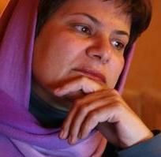

پذيرش > تریبون > مقالات > زماني براي گفتن هاي شجاعانه؛ آنچه كمپين مي تواند به جنبش سبز بياموزد/ محبوبه عباسقلی (...)


 زماني براي گفتن هاي شجاعانه؛ آنچه كمپين مي تواند به جنبش سبز بياموزد/ محبوبه عباسقلی زاده زماني براي گفتن هاي شجاعانه؛ آنچه كمپين مي تواند به جنبش سبز بياموزد/ محبوبه عباسقلی زاده
21 مهر 1388 - - نسخه قابل چاپ
پاسخ محبوبه عباسقلی زاده به پرسش های تغییر برای برابری
***
تغییر برای برابری - فعالان کمپين يک ميليون امضا با گرايشات و تنوعات فکری توانسته اند در سه سال گذشته حول خواست لغو تمامی قوانين تبعيض آميز جنسيتی، مبارزه مدنی حول حقوق برابر شکل داده و به پيش ببرند و امروز هريک بر پايه اعتقاد خود در عرصه های متفاوت مبارزه جاری برای آزادی و حقوق دمکراتيک شهروندی حاضرند . اين نکته که زنان در عرصه اين مبارزه حضوری چشمگير دارند بر کسی پوشيده نيست. تصوير ندا که در حافظه تاريخی مردم ايران و جهان ثبت شده نشان از اهميت نقش زنان در مبارزه برای آزادی و عدالت اجتماعی دارد . اين شرايط اما پرسش های عاجل زير را برابر ما قرار می دهد :
چگونه می توان در بستر مبارزات جاری ، فکر برابری خواهی را به دفاع از آزادی های شهروندی و عدالت اجتماعی پيوند زد ؟
تحول شرايط چه تاثيری بر کمپين يک ميليون امضا دارد ؟
شرکت فعالان و ياران کمپين و نيز تمامی مدافعان حقوق زنان در اين بحث بر فراهم آوردن پاسخ و يا پاسخهای هر چه خلاق تر ياری خواهد کرد . باشد که اين همفکری و همدلی ما را در پيوند مبارزه برای برابری و آزادی و عدالت اجتماعی ياری دهد .
***
تغییر برای برابری - پس از گذشت چهار ماه از آغاز اولين مبارزات خياباني كه ظرف مدت كوتاهي به جنبشي فراگير و مدني تبديل شد، بحث در مورد چگونگي ارتباط بين جنبش برابري خواهي زنان و جنبش دمكراسي خواهي سبز، تقريبا به نوعي اجماع نزديك شده است. به رغم تفسيرهاي مختلف همه تقريبا بر اين باوريم كه رابطه بين اين دو ، رابطه اي متقابل است. اين كه جنبش زنان را "خرده جنبشي" حساب كنيم كه بقايش حل شدن در جنبش كلان و فراگير سبز است، به همان ميزان غير واقعي است كه هيچ رابطه معنا داري ميان هر دو متصور نشويم. نه در تئوري بلكه در عمل كنش هاي اخير فعالان نشان داده است كه نه مي توان از عامليت بر خواسته از هويت جنبش زناني چشم پوشي كرد و نه از هويت جمعي بر آمده از جنبش سبز؛ هر دوي اينها بخش هاي پررنگ تر هويت متكثر ما هستند كه در كنش هاي روزانه نمودي تلفيقي به خود مي گيرند.
پديده هاي نوظهور تلفيقي بين دو جنبشي را مي توان در مادران عزادار شنبه هاي پارك لاله كه عموما نسل اولي هايي هستند كه رنج سركوب دهه شصت را تحمل كرده اند تا دل نوشته هاي عاشقانه و بي پرواي زنان جواني كه خود را فمنيست هاي مسلمان نسل سومي مي دانند، تا زنان اصلاح طلبي كه منتظران فعال زيرپل سيماني اوين اند، تا روزنامه نگاران و فعالان حقوق بشري كه انفرادي اوين را از صبر خود به زانو در آورده اند، تا نويسندگان و خبرنگاران و هنرمندان شجاعي كه روايت آنچه بر همه اينان رفته است را با رويكردي زنانه مكتوب و مصور مي كنند، مشاهده كرد.
حتي حركت تحسين بر انگيززناني كه روز چهلم ندا آقا سلطان در بهشت زهرا سد انساني مقابل يگان هاي ويژه شده بودند، الهام يافته از حركت خودجوش مادران و خواهران سر گشته اي است كه براي نجات جان برادر و پسر نوعي و در همزاد پنداري ناشي از هويت جمعي، خود را ميان دو مرد جوان، كه يكي باتوم دارد و ديگري نوار سبز، حايل مي كردند و جوانان دست بسته را از چنگال نيروهاي يگان بيرون مي كشيدند.
در اين كنش ها كه نمونه هايي از ابتكارات فعالان جنبش زنان است، بخوبي مي توان عنصر خود آگاهي جنسيتي و وفاداري به اصل برابري خواهي را در متن جنبش سبز، به عنوان واقعيت هايي كه منبع اصلي قرائت تئوريك از نسبت بين جنبش زنان و جنبش سبز است، مورد استناد قرار داد.
اين مظاهر تلفيقي اما نمي تواند همه ظرفيت و توانايي هايي كه جنبش زنان در كل و فعالان كمپين يك ميليون امضا به طور خاص داشته اند را در بربگيرد. كمپين در طول سه سال فعاليت مستمر مدني ، به تجربيات مهمي در سبك زيستن شبكه اي، تحمل سركوب و اعتراض بدون خشونت دست يافته است كه متاسفانه در اشاعه آن اهمال مي ورزد. بخصوص در شرايط فعلي كه جنبش فراگير سبز دستخوش ئتوري پردازي هاي بعضا انتزاعي شده است و سركوب و مهاجرت هاي ناشي از ارعاب، طيفي از فعالان مدني را درگير خود كرده است، زمان مناسب گفتن هاي شجاعانه از تجربه هاي شخصي فعالاني است كه تجربه اي غني در نحوه مقاومت به سبك امروزي و بافت سياسي – اجتماعي همين دوره داشته اند. ادبيات مقاومت در برابر سركوب هنوز هم بر اساس خاطرات دو دهه پنجاه – دوران شاه – و دهه شصت است. در حالي كه شرايط امروز اقتضا مي كند كه تجربه هاي امروزين گفته شود. آن دسته از ياران و فعالاني كه از خرداد 85، تا به امروز سه سال تمام سرد و گرم روزگار سركوب و ارعاب و زندان را را با بردباري برتافتند، اكنون حرف بزنند.
اگر آورده كمپين يك ميليون امضا را بر طبق اخلاص مشاهده كنيم، دستاورد مهم آن نه يك ميليون امضا و نه حتي دو صد هزار امضا، بلكه تجربه مدني بدون خشونت و مستمري است كه مي تواند مدلي كوچك از امكان تحقق سازماندهي مدني شبكه وار و مدرن در كالبد جنبش سبز باشد. از اين نظر تنها نمونه عملي آنچه كه اكنون شبكه اجتماعي جنبش سبز ناميده مي شود، در مدل كمپين يك ميليون امضا وجود دارد. فعالان كمپين در اين ميانه كه بحث سازماندهي و تحليل هاي شبكه اي و حتي نحوه استفاده از فضاهاي عمومي مطرح است و با توجه به تجربه غني سه ساله خود، بگويند كه ناكامي ها و كامروايي هايشان در تشكيلات افقي چه بوده است و تنازع قدرت در چنين شبكه هايي چه حالت دارد، چگونه در آن وامانده اند يا به پيش رفته اند و چگونه توانسته اند جمع متنوعي از چپ و راست و مذهبي و سكولار و نسل هاي متنوع را زير يك كنش واحد جمع كنند. توازن قدرت را چگونه برقرار كرده اند و رفتارهاي دمكراتيك عاري از خشونت را چگونه ترويج كرده و تا چه حد موفق به عقلاني كردن اين رفتارها شده اند.
جنبش سبز نيز داده قابل توجهي براي جنبش زنان دارد كه مهمترين آن ازدياد " سرمايه اجتماعي" در بين فعالان جنبش زنان است و از آن رو كه تنوع و گستردگي كمپين يك ميلیون امضا بيش از ساير گروههاي جنبش است، طبيعي است كه بهره آنان نيز از اين سرمايه اجتماعي بيش از سايرين است. اكنون كه درد مشترك و عقل جمعي باعث ناديده گرفتن تمايزها و تقابل هاي سابق شده است ، شايسته است كه به مدد اين سرمايه اجتماعي، همدلي و همبستگي ائتلافي را قوت بخشيده و شكاف هايي كه گاهي مانع از ايجاد همگرايي ها و جبهه هاي حداقلي مطالبه محور بوده است را با اتكاء به اين سرمايه غني اجتماعي ترميم كنيم
ارسال به
بالاترین
،
توییتر
،
فریندفید
،
فیسبوک
در همين بخش :
 دهمین دورۀ مراسم تندیس صدیقه دولت آبادی ۱۳۹۲ دهمین دورۀ مراسم تندیس صدیقه دولت آبادی ۱۳۹۲
کارت پستالهایی به بهانهی هشت مارس و به یاد همهی مبارزین راه برابری
بیانیه بیش از 350 تن از مدافعان حقوق زنان به مناسبت روز جهانی زن؛ زنان هر روز فرودستتر میشوند
لباسی که برای تن ما دوخته اند! /اعظم بهرامی
چالشها و چشمانداز فعالیت مدنی زنان
ديگر بخش ها :
طرح یک میلیون امضا
|
مقالات
|
سایت نوشته ها
|
اخبار
|
گزارش كمپين
|
گفت و گو
|
علیه سکوت
|
كوچه به كوچه
|
نامه های شما
|
گزارش ویژه
|
گفتگو با اعضا
|
ویژه سالگرد کمپین
|
تصویر برابری
|
دل آرام علی
|
تریبون
|
مقالات
|
تاریخ شفاهی
|
خارج از چارچوب
|
کتابخانه
|
درباره کمپین
|
کمپین در شهرها
|
کمپین در بند
|
صدای تغییر
|
ویژه 22 خرداد
|
لایحه حمایت از خانواده
|
گالری
|
عشا مومنی
|
امیر یعقوبعلی
|
خدیجه مقدم
|
راحله عسگری زاده و نسیم خسروی
|
پروین اردلان،جلوه جواهری، مریم حسین خواه، ناهید کشاورز
|
زینب پیغمبرزاده
|
سعیده امین، سارا ایمانیان، محبوبه حسین زاده، ناهید کشاورز و همایون نامی
|
احترام شادفر
|
نسیم سرابندی زاده،فاطمه دهدشتی
|
وبلاگ مهمان
|
پرونده خرم آباد
|
دستگیری ها
|
مریم مالک
|
پرستو اللهیاری
|
مهرنوش اعتمادی
|
سمیه رشیدی
|
Other Languages
|
همراهان
|
«فراخوان کمپین ده روز با بهاره هدایت»
| English
|